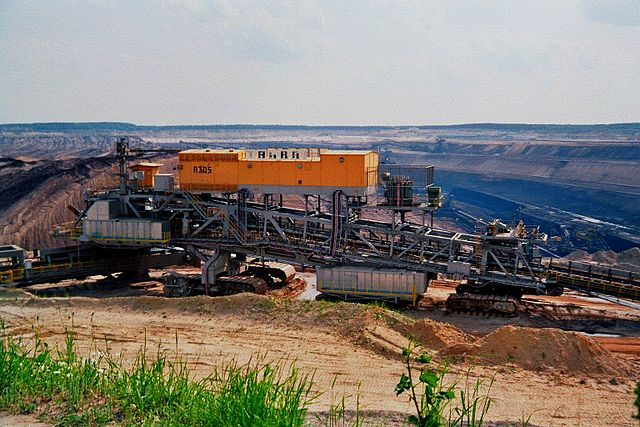

Theoretical Foundations for Water Management in Energy Transitionss
River Basin Modelling Preview" style="width:100%; max-height: 300px; object-fit: cover; margin-bottom: 1rem;"/>Goal
This study develops a theoretical modeling framework to support adaptive water management in the Spree River Basin, a region deeply affected by Germany’s coal phase-out. Rather than prescribing fixed solutions, the framework offers a structure to balance competing stakeholder demands — from power plant cooling and ecological conservation to urban drinking water and mine restoration — under changing hydrological and political conditions.
Methods
The model employs a control volume approach and integrates multiple stakeholder objectives using a multi-objective optimization framework based on Evolutionary Multi-Objective Direct Policy Search (EMODPS). Core modeling steps included:
- System Representation: Conceptual mapping of the Spree Basin’s spatial configuration, including key reservoirs and groundwater contributions.
- Quantitative Formulation: Objective functions were designed to reflect four critical demands: mine restoration, power plant cooling, ecological flow, and urban water supply.
- Optimization Framework: Use of EMODPS combining Radial Basis Functions (RBFs) and evolutionary algorithms to derive Pareto-optimal reservoir release strategies.
- Result Assessment: Trade-off, sensitivity, and vulnerability analysis to explore system resilience and stakeholder tensions under uncertainty.
Case Context
The Spree River Basin is a critical water system intersecting mining, ecological, and urban interests in eastern Germany. Its hydrological regime has been artificially shaped by lignite mining, making the region highly sensitive to the consequences of the ongoing energy transition. Water governance is further complicated by the involvement of three federal states (Brandenburg, Saxony, Berlin), each with distinct regulatory priorities. This study provides tools to anticipate and manage the emerging imbalance between supply and demand as artificial inflows decline.
Skills Demonstrated
- Computational Modeling: Building and formalizing a multi-objective control volume model using EMODPS.
- Simulation & Optimization: Simulating reservoir operations under different scenarios and using heuristic optimization for trade-off exploration.
- Objective Function Design: Translating complex stakeholder needs into formal performance indicators.
- Quantitative–Qualitative Bridging: Interpreting numerical model outcomes in terms of policy relevance and stakeholder implications.
- Scenario Assessment: Running vulnerability and sensitivity analysis to stress-test strategies and identify decision levers.
- Hydro-political Framing: Understanding the interplay between hydrological processes and multi-level water governance.